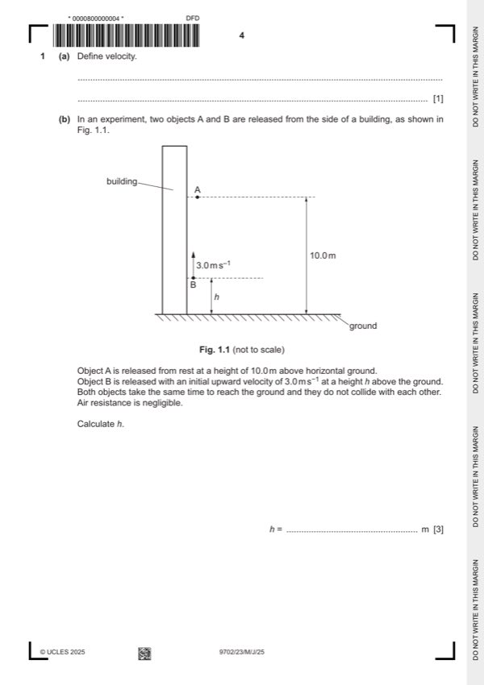

Question 1

Original paper page 4
Part 1(a) — solution
- [B1] Obtain/use: Rate of change of displacement
Mark points
- [B1] Obtain/use: Rate of change of displacement
Part 1(b) — solution
For object A: C1
Mark points
- Include the ideas shown in the solution above.
Part 1(c)(i) — solution
- [B1] Obtain/use: time taken (to reach the ground is) same
- [B1] Obtain/use: The initial vertical (component of the) velocity is the same (as in part (1b))
Mark points
- [B1] Obtain/use: time taken (to reach the ground is) same
- [B1] Obtain/use: The initial vertical (component of the) velocity is the same (as in part (1b))
Part 1(c)(ii) — solution
- [B1] Obtain/use: The (total) initial energy is greater (than in part (1b))
- [B1] Obtain/use: change in gravitational potential energy is same, so speed is greater
Mark points
- [B1] Obtain/use: The (total) initial energy is greater (than in part (1b))
- [B1] Obtain/use: change in gravitational potential energy is same, so speed is greater